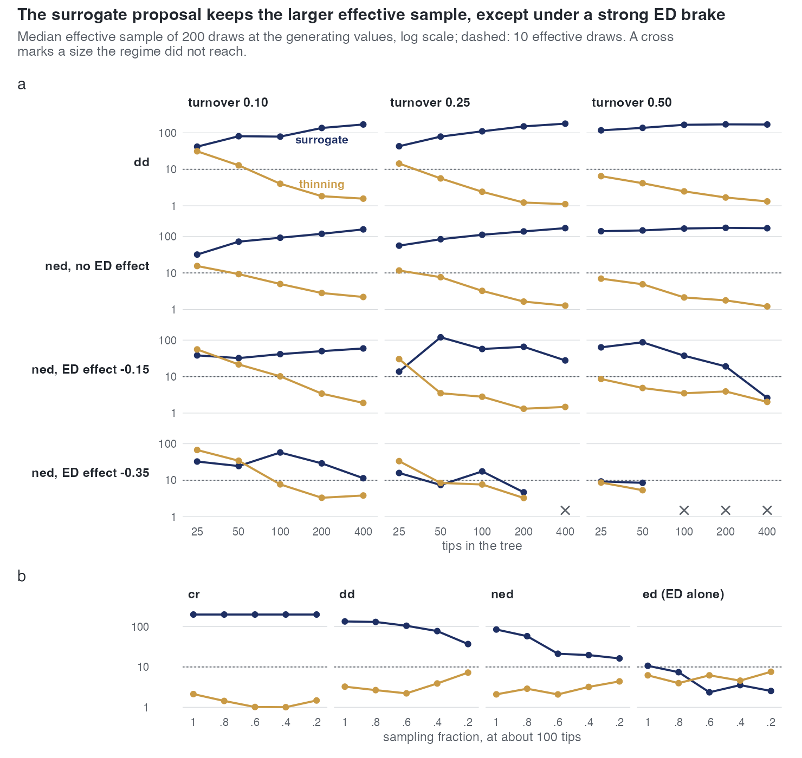
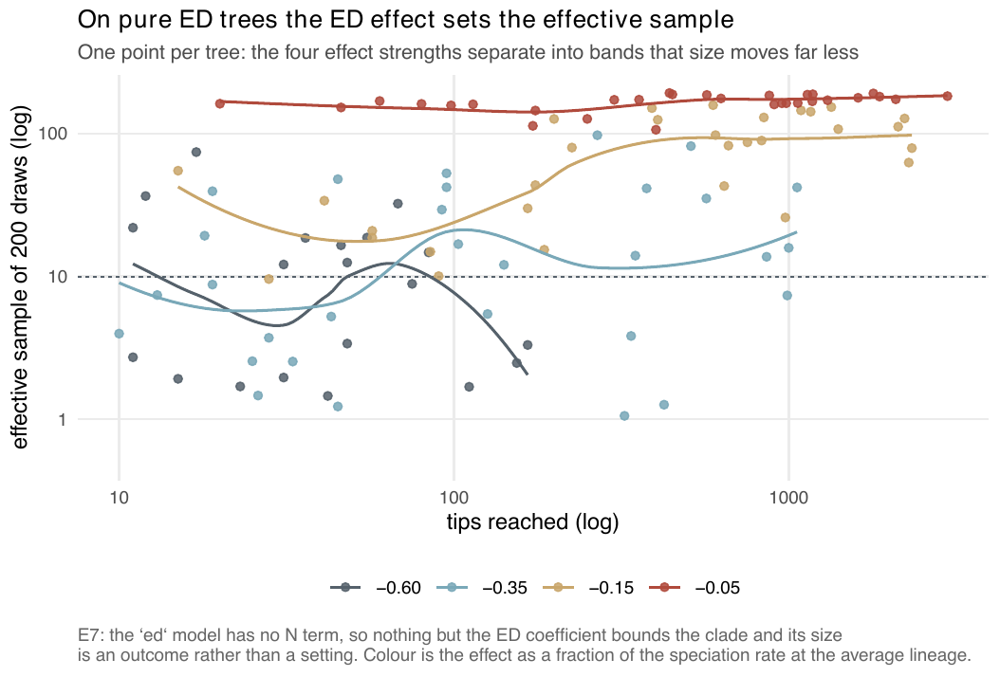

E7 — The feasibility map: where is the surrogate proposal usable?
| Status | complete; 5 cells produced no tree and 1 cell only 2 of 10 (recorded as such); the dd rows hold; the ed and ned rows are superseded by E46 when it reports, which measures the effective sample at the generating values before each fit (Estimability) |
| Package build | library e8, installed at 4f42b27 on 2026-09-20; the build audit found that library identical to a clean build except ned on the thinning proposal; the ed and ned cells use the surrogate and the thinning proposals |
| Driver / analysis | sim/E7-feasibility.R; figures sim/figures-e6e10.R, sim/figures-study.R |
| Data | results/E7/feasibility.csv (720 rows, 72 cells; 58 rows carry no tree), results/E7/design.rds |
Question
Nothing stated where the surrogate proposal is usable. The ned arm of the size study S failed at 200 tips and above, and three probes gave three different reasons before the cause was isolated: at 416 tips and turnover 0.25 the proposal must invent some 600 hidden lineages, and the effective sample was 2.1 of 97 at the generating values with a converged mean field. E7 maps the effective sample of both proposals over size, turnover and ED effect, so that the boundary is a stated result.
Design
Three arms, because the models do not admit one grid: dd and ned carry an N term, so capacity is calibrated to land the clade on a target size; ed has no N term, so the ED coefficient is the axis and the tip count an outcome.
| arm | axes | cells |
|---|---|---|
dd |
tips ∈ {25, 50, 100, 200, 400} x turnover ∈ {0.1, 0.25, 0.5} | 15 |
ned |
the same x ED effect ∈ {0, -0.15, -0.35}\(\lambda\)0, capacity recalibrated per cell | 45 |
ed |
ED effect ∈ {-0.05, -0.15, -0.35, -0.6}\(\lambda\)0 x turnover, tips observed | 12 |
| parameter | value |
|---|---|
| trees per cell | 10 |
| crown age, \(\beta\)0 | 15, 0.5 |
| ED effect scale | fraction of \(\beta\)0 at the clade's own ED scale (median total branch length per tip of a dd clade of that size) |
| parameters | the generating values; no fitting |
| draws | 200, both proposals on the same trees |
| sampling, link | \(\rho\) = 1, linear |
| comparable figure | ESS per requested draw (thinning can fail to return a draw; the surrogate cannot) |
Pre-set rule
Readout: the contour where the median effective sample falls below 10, per model and proposal, and the mean number of hidden lineages per draw. Deliverable: a figure a user reads before a fit, and the sentence "the surrogate proposal is usable up to here".
Results
dd: the surrogate's median ESS rises with size, 42 → 169 (turnover 0.10), 43 → 178 (0.25), 117 → 169 (0.50) from 25 to 400 tips; thinning falls from 31, 14 and 6.5 at 25 tips to 1.1-1.6 at 400.
ned (median ESS surrogate / thinning; bold where the surrogate is below 10):
| ED effect | turnover | 25 | 50 | 100 | 200 | 400 tips |
|---|---|---|---|---|---|---|
| 0 | 0.10 | 32 / 15.5 | 72 / 9.3 | 92 / 5.0 | 118 / 2.8 | 156 / 2.2 |
| 0 | 0.25 | 56 / 11.7 | 84 / 7.7 | 111 / 3.2 | 137 / 1.6 | 169 / 1.3 |
| 0 | 0.50 | 139 / 7.0 | 146 / 4.9 | 165 / 2.1 | 173 / 1.8 | 168 / 1.2 |
| -0.15 | 0.10 | 38 / 55.5 | 32 / 21.6 | 41 / 10.2 | 50 / 3.4 | 59 / 1.9 |
| -0.15 | 0.25 | 14 / 30.2 | 120 / 3.5 | 57 / 2.8 | 66 / 1.3 | 28 / 1.5 |
| -0.15 | 0.50 | 63 / 8.6 | 87 / 4.9 | 37 / 3.5 | 19 / 3.9 | 2.6 / 2.0 (2 trees) |
| -0.35 | 0.10 | 33 / 67.4 | 25 / 34.2 | 58 / 7.7 | 29 / 3.3 | 11.4 / 3.8 |
| -0.35 | 0.25 | 16 / 33.4 | 7.4 / 8.4 | 18 / 7.7 | 4.7 / 3.3 | no tree |
| -0.35 | 0.50 | 9.3 / 8.6 | 8.5 / 5.3 | no tree | no tree | no tree |
ed (tips an outcome; median tips, ESS surrogate / thinning): at -0.05 the clades reach a median 1394, 928 and 106 tips (turnover 0.10, 0.25, 0.50) with surrogate ESS 155-186 and thinning 1.0-2.2; at -0.15, 1372, 622, 71 tips and 128, 88, 19.8 / 1.0-5.7; at -0.35, 538, 114, 25.5 tips and 38.2, 14.4, 3.9 / 1.2-3.2; at -0.60, 58 and 33.5 tips with 3.4 / 12.9 and 13.6 / 2.5; at -0.60 and turnover 0.50 no tree.
Counts over the 67 cells with trees: the surrogate falls below 10 in 7, every one with an ED term (ned -0.35 at turnover 0.25 and 50 or 200 tips, at 0.50 and 25 or 50 tips; ned -0.15 / 0.50 / 400; ed -0.60 / 0.10; ed -0.35 / 0.50). Thinning falls below 10 in 54 (12 of the 15 dd cells, 32 ned, 10 ed). The surrogate keeps the larger sample in 15 of 15 dd, 35 of 40 ned and 10 of 11 ed cells; thinning is larger in ned at 25-50 tips with -0.35 at turnover 0.10 and 0.25 (67 vs 33, 34 vs 25, 33 vs 16, 8.4 vs 7.4), at 25 tips with -0.15 / 0.10 (55 vs 38), and in ed -0.60 / 0.10 (12.9 vs 3.4). Hidden lineages per draw grow from about 10 at 25 tips to 85-100 at 400 tips and turnover 0.10, and to 290-430 at 400 tips and turnover 0.50, for the surrogate; thinning invents 10-45% more at the large cells.


ed tree. The four effect strengths separate into bands that size moves far less: -0.05 keeps the sample near 150-200 at any size, -0.60 leaves it below 10 on most trees.Conclusion
Deliverable: produced. The surrogate proposal is usable (median ESS ≥ 10) on every dd cell at every size and turnover, and on ned and ed except under a strong negative ED effect (-0.35\(\lambda\)0 or stronger) at turnover 0.25 and above, and at -0.15 with 400 tips and turnover 0.50; its ceiling is set by the ED effect and the turnover, not by tree size, and on dd it improves with size. The thinning proposal is below 10 in 54 of 67 cells. Two qualifications. These are effective samples at the generating values, without fitting, so they are best cases. And the record contains a contradiction now settled by the data: the report says thinning falls below 10 "in twelve, all of them plain DD", the paper says "in 54, twelve of them plain DD"; the data give 54.
The ed and ned cells were drawn by the raw-ED simulator before f30a791, which made ed clades about 30% too large, on a build the record does not name; E46 measures the effective sample at the generating values again before each fit, on the current build and the exponential link. The dd cells do not involve that simulator and hold.
Related
- S — its failed
nedarm led to E7. - E6 — the same proposals against the sampling fraction.
- E3 — the two thinning variants against each other.
- E12 — the power curve for the ED term, whose design used E7 to hold turnover at 0.10 and to set the threshold of 10 effective draws below which a cell is sampler-limited.